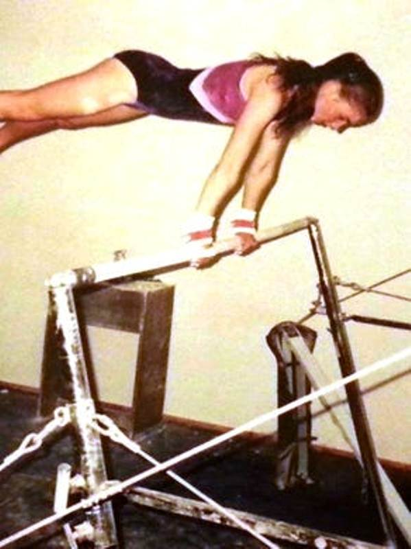

Larry Nassar is a former American osteopathic physician and USA Gymnastics national team doctor who is a convicted sex offender in the 2015 USA Gymnastics sex abuse scandal. He is accused of sexually assaulting more than 250 women and girls back in the early ’90s. Larry Nassar is serving a federal penalty of 60 years in prison and the state penalty of 40 to 125 years in prison after he pleaded guilty to 10 of those accusations. Before the sentence, Nassar was a sought-after physician at Michigan State University (MSU), a star in sports medicine, and a household name in the gymnastic community for more than two decades.
Contents
Wiki/Biography
Larry Nassar was born as Lawrence Gerard Nassar (full name) on Friday, August 16, 1963 (age 56 years; as in 2019), in Farmington Hills, Michigan, United States. In 1978, when Larry was 15, on the recommendation of his older brother Mike, he started giving training to student-athletes of women’s gymnastics team at North Farmington High School in Michigan. While explaining about his career as a gymnastics doctor on his Facebook post, he wrote –
My high school years set a strong foundation for the rest of my life.” [1]The Detroit News
In 1985, Larry earned his undergraduate degree from the University of Michigan where he studied kinesiology (the scientific study of human or non-human body movement). [2]MLive While pursuing his undergraduate degree at the University of Michigan, Larry also worked for the university’s football and track and field teams. [3]USA TODAY
During 1985-89, Nassar got himself enrolled in a master’s degree program and also worked as a graduate assistant athletic trainer at Wayne State University; however, he dropped out of his master’s degree when he was accepted to medical school at Michigan State University. In 1993, Larry Nassar earned his Doctor of Osteopathic Medicine (a professional doctoral degree for physicians and surgeons offered by medical schools in the United States) from the Michigan State University College of Osteopathic Medicine. [4]USA TODAY

Larry Nassar’s photo appears in the 1993 composite of the Michigan State University College of Osteopathic Medicine
Physical Appearance
Height (approx.): 5′ 5″
Hair Color: Black
Eye Color: Hazel Brown
Family & Ethnicity
Larry Nassar has Lebanese descent from his parents’ side. [5]Wikipedia
Parents & Siblings
Larry Nassar was born to Fred Nassar (father) and Mary Nassar (mother). His father died in 2000 while his mother died in 2019.

Larry Nassar’s Mother Mary A. Nassar
Larry is the youngest among the five children of his parents. He has three elder brothers – Fred (Val), Dr. Michael (Mike), and Lin (John) Armitage; and one elder sister – Nancy (Edward) Wolf.
His two elder brothers, Fred (Val) and Dr. Michael (Mike) have died.
Relationships, Wife & Children
On October 19, 1996, Larry Nassar got married to Stephanie Lynn Anderson at St. John’s Catholic Church in East Lansing. He has two daughters, Katelyn and Caroline, and one son, Ryan. Following Nassar’s convictions, Stephanie filed for divorce and in July 2017, she was granted the divorce from her husband Larry Nassar and was also given the full custody of their three children.
Career
In 1988, Larry Nassar began working with John Geddert (a former American gymnastics coach) at a gymnastics training club called “Gedderts’ Twistars USA Gymnastics Club” in Dimondale, Michigan. [6]USA TODAY After receiving his osteopathic medical degree from Michigan State University, Larry, in 1996, completed his family practice residency at St. Lawrence Hospital in Lansing, which has been merged with Sparrow Hospital in Michigan. Thereafter, he was appointed national medical coordinator for USA Gymnastics where he attended the US gymnastics teams at the Olympic Games in Atlanta in 1996.

Larry Nassar extending his hand to help the U.S. gymnast Kerri Strug during the 1996 Atlanta Olympics
After completing a primary care sports medicine fellowship in 1997, Nassar began working as a team physician at Holt High School and then a team physician and assistant professor at MSU where he earned $100,000 annually. [7]The Detroit News In 2000, Nassar attended the Olympic Games in Sydney with the US gymnastics teams. In 2008, he attended the Olympics Games in Beijing with the US gymnastics teams. In 2014, Nassar retired as USA Gymnastics Medical Coordinator, but he remained a team doctor for women’s artistic gymnastics. On August 30, 2016, Michigan State University (MSU) relieved Larry Nassar of clinical and patient duties. On September 20, 2016, MSU fired Nassar from his position as an associate professor in the College of Osteopathic Medicine.
Sexual Assault Accusations
More than 250 women and girls have accused Larry Nassar of sexual assault. Although many gymnasts had started complaining about Nassar’s behavior back in the early ’90s, it wasn’t until 2015 that action was taken against him by the US Gymnastics.

Larry Nassar and the organizations where the alleged abuse may have occurred
The first sexual abuse against Larry Nassar was reported back in 1994 when an American gymnast, Jamie Dantzscher, who later became an Olympic medalist, alleged him to sexually abuse her, and according to a 2016 lawsuit, Nassar continued to abuse her for six years. [8]ESPN

Jamie Dantzscher during her testimony against Larry Nassar
Reportedly, Nassar had started sexually abusing the women gymnasts as early as 1992; even before he completed medical school and became a licensed doctor. In this earliest claim against Nassar, a woman accused him of sexually assaulting her at his apartment in Michigan in 1992, when Nassar was still a medical student. According to the lawsuit filed by the woman, Nassar had invited her to his apartment to participate in some medical research, and as compensation, he offered her a full-body massage, and during the course, he penetrated her vaginally. The woman also claimed that at that time, she was between the ages of 12 and 14. [9]ESPN According to another lawsuit filed in 2017, a parent had raised concerns to Twistars owner John Geddert about Nassar back in 1997, but Geddert didn’t notify police at that time and even continued to recommend Nassar as a physician. [10]MLive In 1999, when an MSU track and cross country runner, who is identified as Jane X Doe, complained about Nassar’s behavior to a staff member of the athletic program and athletic trainers that Nassar was penetrating her vagina during treatment for an injured hamstring, she was told by the staff members –
Nassar is an Olympic doctor and he knows what he is doing.”[11]MLive
The Lansing resident Larissa Boyce accused Nassar of sexually assaulting her from September 1997 to 2000. While filing a lawsuit against Nassar, Larissa Boyce said,
He used his fingers to go into intimate areas, saying it was going to relieve my back pain. But I trusted him. I mean, he was a doctor and treated the Olympic gymnasts, and so I thought, ‘OK, if this is going to make my back feel better so I can continue doing gymnastics, then OK.’” [12]The Detroit News
In 1999 and again in 2000, when an MSU softball player named Tiffany Thomas Lopez complained about Nassar’s behavior to three MSU athletic trainers, they told her that she should be grateful to be treated by a world-renowned doctor. [13]MLive

Tiffany Thomas Lopez during her testimony against Larry Nassar
In her criminal complaint against Nassar, another gymnast named Rachael Denhollander said that when she was 15, Nassar sexually abused her during treatments for lower back pain in 2000. [14]MLive While testifying Nassar’s sexual abuse, Rachael Denhollander said,
He has everything he needs to be an incredible leader. He has the personality. He has the skill. He has the knowledge. And he’s using that to prey on people… What a waste.”
Rachael Denhollander as a teenage gymnast
Following Rachael Denhollander, more survivors came forward including Olympic champions and household names, like Simone Biles, Gabby Douglas, McKayla Maroney, Aly Raisman, and Jordyn Wieber. [15]The Guardian
In 2004, when a victim in Nassar’s Ingham County charges told her parents that Nassar had sexually abused her, they didn’t report to police. [16]USA TODAY Three months after an MSU graduate complaining about Nassar’s indecent behavior in 2014, MSU cleared Nassar of any wrongdoing. [17]USA TODAY.
Media Coverage
On August 4, 2016, The Indianapolis Star, a popular morning daily newspaper in the United States, published a lengthy investigation into USA Gymnastics and its handling of sexual abuse complaints. In September 2016, The Indianapolis Star reported about the charges framed by Rachael Denhollander and another gymnast against Larry Nassar. Rachael, who lives in Kentucky said,
Over the last 16 years, I’ve realized I have a responsibility, and the question about whether or not to speak publicly cannot center around what’s easy for me.” [18]IndyStar
In February 2017, 60 Minutes, an American news magazine and television program broadcast on the CBS television network, interviewed three former gymnasts: Jeanette Antolin, Jessica Howard, and Jamie Dantzscher in which they explained how Nassar had sexually abused them.
In November 2017, 60 Minutes, had an interview with the six-time Olympic medalist Aly Raisman who said that she spoke to FBI investigators about Nassar after competing at the 2016 Olympics in Rio de Janeiro.

Aly Raisman during her testimony against Larry Nassar
Raisman’s accusations followed by the gold medal-winning gymnast McKayla Maroney who said that Nassar had started sexually abusing her when she was 13 and continued until she retired from the sport in 2016. [19]Time McKeyla Maroney also used the #MeToo hashtag on Twitter to campaign against Nassar.
Child Pornography Charges
In December 2016, Larry Nassar was first arrested by the FBI on child pornography charges; the FBI agents had recovered more than 37,000 images of child pornography from computer disks and drives. A video was also found of Nassar in which he was allegedly molesting girls in a pool. The State of Michigan charged him with sexually assaulting a minor. [20]Time
Convictions
On November 22, 2016, he was charged in Ingham County with three counts of first-degree criminal sexual conduct where he pleaded not guilty and was freed on a $1 million bond. [21]USA TODAY

Larry Nassar, center seated in a blue suit, appears for a pre-trial examination in Ingham County District Court in December 2016
After Larry Nassar pleaded guilty to receiving child pornography on July 11, 2017, Judge Janet T. Neff, sentenced him to 60 years in federal prison on supervised release on December 7, 2017. [22]United States Department of Justice On November 22, 2017, Nassar pleaded guilty to seven counts of first-degree criminal sexual conduct in Ingham County Circuit Court, and on November 29, 2017, he pleaded guilty in Eaton County to an additional three counts of first-degree criminal sexual conduct. [23]NBC NEWS

Larry Nassar after pleading guilty to seven sexual assault charges in November 2017 in Circuit Court
On January 24, 2018, Larry Nassar was sentenced to 40 to 175 years in prison by the Ingham County Judge Rosemarie Aquilina. [24]BBC In her judgment, while describing Nassar as “precise, calculative, manipulative, devious, and despicable,” Rosemarie Aquilina said,
I just signed your death warrant.”
On February 5, 2018, Nassar was sentenced to 40 to 125 years in prison by the Eaton County Judge Janice Cunningham; bringing an end to Larry Nassar’s lawsuits. [25]USA TODAY
A Predator in Disguise
While working at MSU and creating a life with his family; Nassar had become a trusted, gentle, and admired figure in his locality, and with these attributes, he earned a reputation as one of the most sought-after physicians in the world of gymnastics. Nassar was a leader in his community, and he was known for his helping hand in his locality. He would often play along with his neighbor’s children and join other residents to clear snow-covered sidewalks. Judy Rosebush, who lived across the street from Larry Nassar in Holt, Michigan for 17 years, can’t say enough good things about Larry and while sharing an experience when Larry helped her when she had a rapid heartbeat, she says,
He came running across the street in his bare feet with a stethoscope and told me what to do and where to go. I really cannot say enough good about Larry because he is just a wonderful man. He will do anything in the world for anybody. We all love Larry. We really, really love Larry.” [26]The Detroit News
Facts/Trivia
- Reportedly, Nassar has at least six research papers to his name on the treatment of gymnastics injuries. [27]Science Direct
- After one of his daughters was diagnosed with autism, Larry started a foundation to introduce children with special needs to gymnastics. [28]The Detroit News
- Following Nassar’s convictions, many gymnastics officials who had worked with Nassar, including the entire 18-member board of USA Gymnastics, MSU President Lou Anna Simon, and MSU Director of Athletics Mark Hollis, tendered their resignations. [29]CNN
- Following Nassar’s convictions, MSU settled the lawsuit filed by the victims by paying $500 million to 332 alleged victims; the largest amount of money in history paid by a university to settle a sexual abuse case. [30]The Washington Post
- On July 18, 2018, gymnast Sara Klein identified herself as Nassar’s first victim. She revealed this while receiving the Arthur Ashe Award for Courage at the 2018 ESPY Awards ceremony, an event that was attended by more than 140 survivors of Nassar’s abuse. Sara Klein, along with the gymnast Aly Raisman and softball player Tiffany Thomas Lopez, received the award on the survivor’s behalf. [31]Free Malaysia Today
- On Christmas Eve 2019, Michigan Attorney General Dana Nessel announced about the suspension of the “investigation into Michigan State’s handling of Larry Nassar;” the probe, which had begun under Dana Nessel’s predecessor, Bill Schuette, back in 2016. [32]NBC NEWS
- His federal custody will be over on March 23, 2069, at that time he will be 105 years old, and then, he will be shifted to a Michigan state prison for his pending state sentences.
- The American documentary filmmaker Erin Lee Carr made a documentary film “At the Heart of Gold,” which was premiered on April 3, 2019, on HBO. The film is based on Larry Nassar’s sexual abuse scandal.

HBO Documentary Film At The Heart of Gold
References


{kind=link}
{kind=link}
{kind=link}
{kind=link}
{kind=link}
{kind=link}
{kind=link}
{kind=link}
{kind=link}
{kind=link}